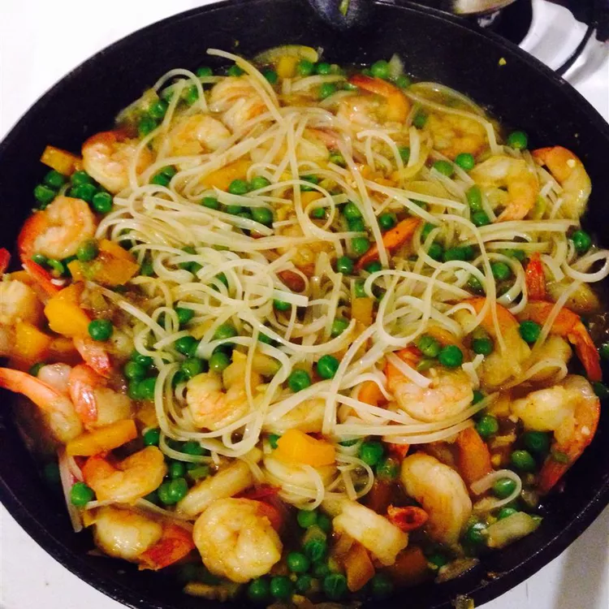

Shrimp Curry

Directions
- ⅔ cup chicken broth
- 1 tablespoon oyster sauce
- 1 ½ tablespoons soy sauce
- 1 ½ teaspoons white sugar
- 3 tablespoons peanut oil
- 1 ½ teaspoons curry powder
- 1 teaspoon minced fresh ginger root
- 1 small red bell pepper, diced
- 1 small red onion, chopped
- 4 green onions, chopped into 1 inch pieces
- 1 (12 ounce) package frozen cooked cocktail shrimp
- 1 ½ cups frozen baby peas
- ½ (8 ounce) package rice noodles, broken into 3 inch pieces and soaked
Directions
Combine chicken broth, oyster sauce, soy sauce, and sugar in a small bowl; set aside.
In a large skillet, heat oil over medium-high heat. Add curry powder, garlic, and ginger; stir-fry for 10 seconds. Add peppers, onions, and scallions; stir-fry for 3 to 5 minutes. Stir in chicken broth mixture and bring to a boil over high heat. Add shrimp and peas, and cook until hot. Add noodles, and cook until the dish is heated thoroughly. Serve immediately.